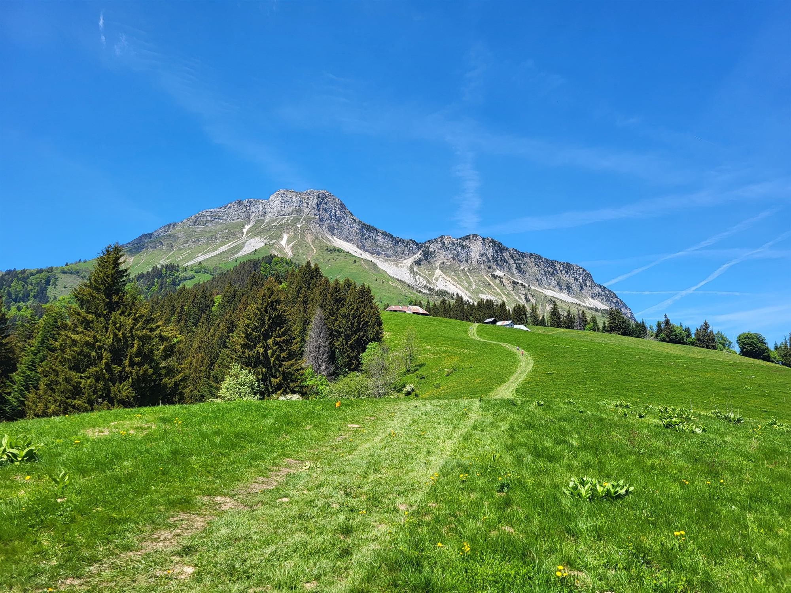
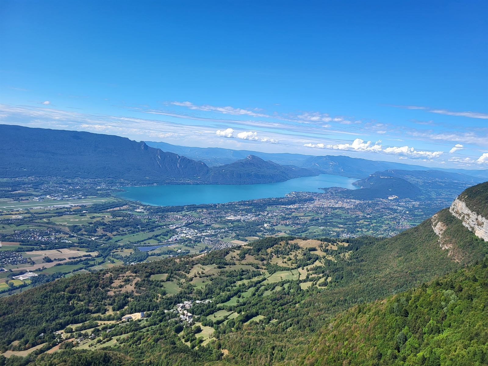
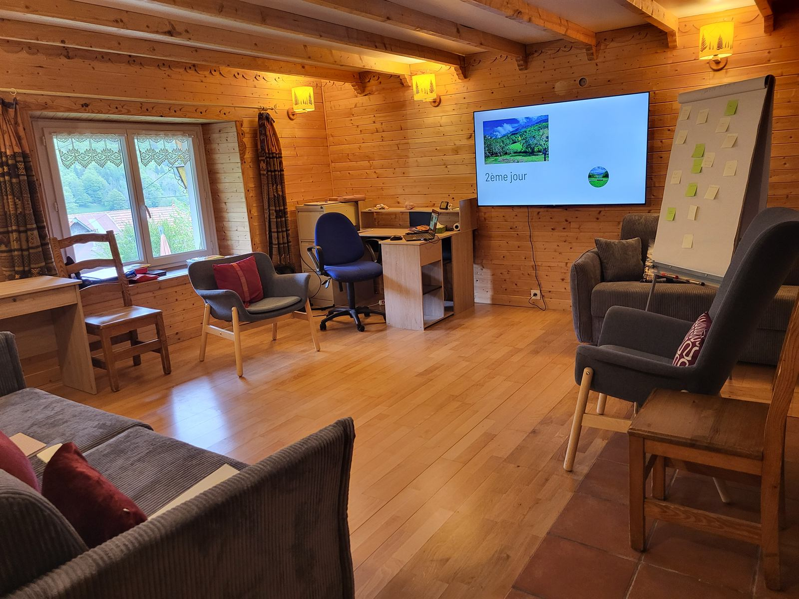
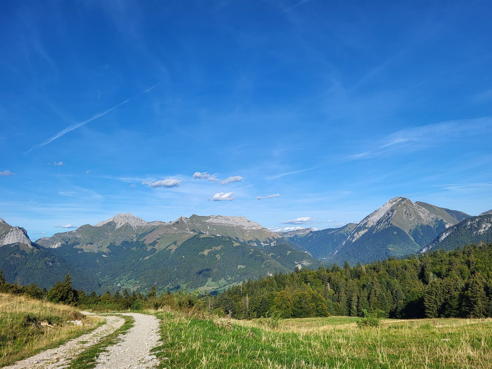
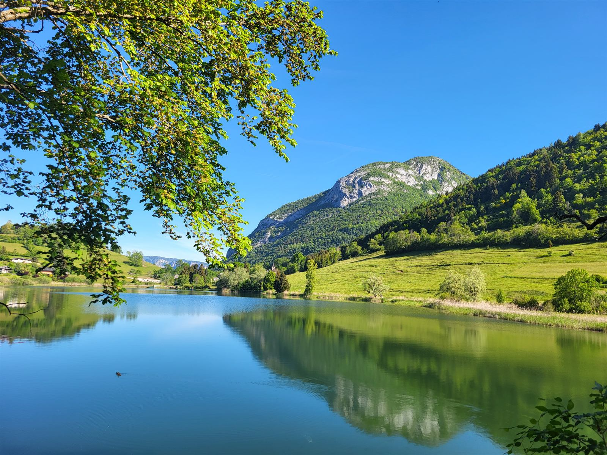
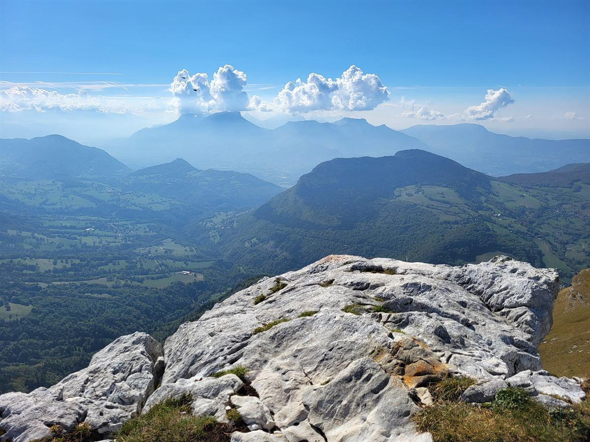
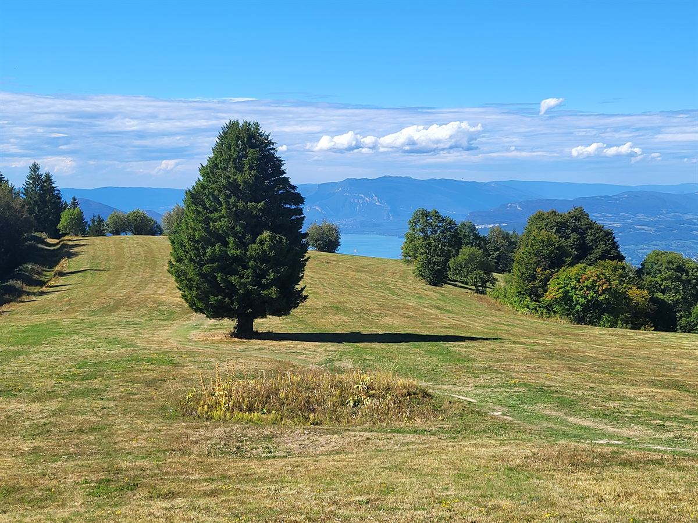
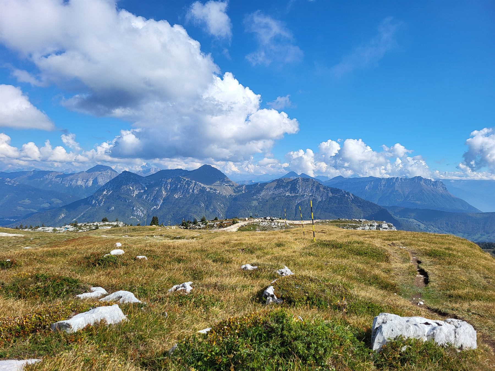

Les stages collectifs
Trois jours pour explorer une thématique et avancer ensemble.
En petits groupes de quatre à six personnes : marches dans les Bauges, exercices de coaching, expériences créatives et richesse des échanges.

Et si vous preniez de la hauteur pour avancer autrement ?Au cœur des montagnes des Bauges, en Savoie, je vous invite à vivre une expérience qui associe marche en nature, développement personnel et exploration de soi. Seul ou en petit groupe, pour retrouver vos ressources, clarifier vos aspirations et choisir votre prochain pas.

Il arrive des moments où nous avons besoin de ralentir, de faire le point, de retrouver ce qui nous anime ou simplement de regarder notre vie sous un autre angle. Changer de paysage peut alors nous aider à changer de regard.
En montagne, nous retrouvons un autre rythme. Nous marchons, nous observons, nous respirons. Un sentier qui bifurque, une montée, un panorama qui s’ouvre... La nature nous offre des images qui peuvent éclairer nos questionnements.
Mais L’Élan des Cimes n’est pas simplement une pause au grand air. C’est une invitation à explorer ce qui vous anime, ce qui vous freine et les chemins qui s’offrent à vous. La marche ouvre de nouvelles perspectives, les ateliers permettent de les approfondir, et les découvertes prennent leur place dans votre vie.
En petit groupe dans les Bauges, seul le temps d’un séjour, ou en séance individuelle, sur place ou à distance.
Trois jours pour explorer une thématique et avancer ensemble.
En petits groupes de quatre à six personnes : marches dans les Bauges, exercices de coaching, expériences créatives et richesse des échanges.

Un à trois jours rien que pour vous.
Un accompagnement individuel, confidentiel et entièrement personnalisé, pour une période difficile, un tournant de vie ou un temps pour soi.

Coaching, thérapie, soins énergétiques, supervision.
Des séances ponctuelles ou régulières, à Aillon-le-Vieux ou en visio, pour avancer sur une question précise à votre rythme.
Trois jours chacun, au cœur du massif des Bauges : la marche le matin, les ateliers l’après-midi. Dates et tarifs sont annoncés au fur et à mesure.

Quand les sollicitations extérieures prennent trop de place, il devient parfois difficile de savoir ce que nous voulons vraiment. Trois jours pour vous recentrer, retrouver vos repères et renouer avec votre liberté de choisir.
Découvrir ce stage
Vous réfléchissez beaucoup, vous analysez, vous anticipez... mais vous avez parfois du mal à écouter ce que vous ressentez. Trois jours pour ralentir, renouer avec vos émotions et vous rapprocher de vos besoins et de vos désirs.
Découvrir ce stage
Vous portez un rêve ou un projet qui vous attire, mais quelque chose vous empêche encore de l'explorer pleinement. Trois jours pour lui redonner de la place, regarder les obstacles autrement et découvrir comment commencer à le rendre possible.
Découvrir ce stage
Le monde change vite. Ces transformations peuvent susciter des questions, des inquiétudes, mais aussi ouvrir de nouvelles possibilités. Trois jours pour prendre du recul, développer vos capacités d'adaptation et agir avec davantage de confiance et de discernement.
Découvrir ce stage
La retraite ouvre un nouveau chapitre, riche de possibilités mais aussi de questionnements. Trois jours pour honorer le chemin parcouru, imaginer ce qui vous attend et construire une nouvelle étape de vie qui vous ressemble.
Découvrir ce stage
« La nature ne donne pas de réponses toutes faites. Elle nous offre parfois une image qui nous aide à trouver les nôtres. »
Je vous propose de vivre les choses plutôt que de simplement en parler.
La marche permet de sortir des raisonnements habituels, de prendre du recul et parfois de trouver des réponses inattendues.
Coaching, exercices corporels, figurines, écriture, dessin, métaphores, mises en situation : différents outils pour explorer vos questions sous plusieurs angles.
En petit groupe, la confiance s’installe, les échanges gagnent en qualité et d’autres perspectives apparaissent.
Il n’y a pas de chemin tout tracé ni de réponse universelle. Mon intention est de vous aider à trouver les ressources et les possibilités qui vous correspondent.

Accompagner les autres sur leur chemin... et oser suivre le mien.
Je m’appelle Odile Bernhardt. Depuis plus de 25 ans, j’accompagne des personnes dans leurs questionnements, leurs changements et leurs projets de vie. J’aime associer la réflexion, les émotions, le corps et la créativité pour ouvrir de nouvelles perspectives.
C’est en marchant que je réfléchis et que je conçois mes stages. En m’installant dans les Bauges avec mon mari, j’ai réalisé un rêve : réunir mon métier d’accompagnante et mon amour de la montagne. Ma façon d’accompagner ? Une présence douce, confrontante et rassurante.
Coach professionnelle · Formatrice · Superviseure · Praticienne en approches énergétiques
Je vous accueille à Aillon-le-Vieux, au cœur du massif des Bauges, en Savoie. Ici, les montagnes, les forêts et les chemins deviennent les partenaires de nos explorations, dans un cadre chaleureux et à taille humaine.
Vous n’avez pas besoin d’être un randonneur expérimenté : les parcours sont adaptés à chaque stage et le niveau de marche est précisé avant l’inscription.
Vous ne trouvez pas votre réponse ? Écrivez-moi, je réponds à chaque message.
Non. La marche est un support de développement personnel, pas un défi sportif. Les parcours sont choisis selon le stage, le niveau du groupe et la météo, à une allure qui permet de parler et d’observer. L’objectif n’est pas de gravir un sommet, c’est de prendre de la hauteur sur ce que vous vivez.
Oui : coaching, accompagnement thérapeutique, soins énergétiques et supervision, à Aillon-le-Vieux ou en visio. Vous trouverez le détail et un bouton de prise de rendez-vous sur la page Séances individuelles.
Quatre à six participants, et quatre au maximum pour le stage « Préparer sa retraite ». Chacun reste libre de ce qu’il partage, dans un cadre de respect, d’écoute et de confidentialité.
Le stage « Préparer sa retraite » est à 900 € TTC (750 € HT), déjeuners, supports et suivi compris. Les tarifs et les dates des autres stages sont annoncés prochainement. Pour Le Refuge des Possibles, le tarif est communiqué avec votre proposition personnalisée. Écrivez-moi pour être prévenu·e.
L’hébergement n’est pas compris. Plusieurs possibilités existent à Aillon-le-Vieux et aux alentours, et je peux vous transmettre une liste.
Les stages et Le Refuge des Possibles sont des accompagnements de développement personnel et de bien-être. Ils ne remplacent pas un suivi médical ou psychothérapeutique lorsque celui-ci est nécessaire.
Vous avez peut-être une question qui revient régulièrement, une envie que vous repoussez, un changement que vous aimeriez préparer. Vous n’avez pas besoin de tout savoir avant de commencer : parfois, le premier pas consiste simplement à décider de prendre du temps pour soi.
Adresse e-mail et téléphone d’exemple, à remplacer avant la mise en ligne.